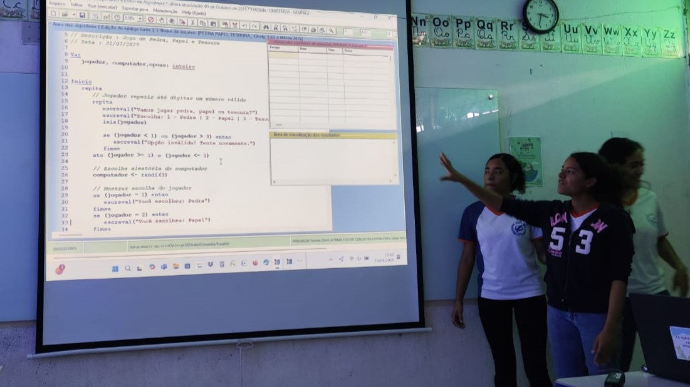
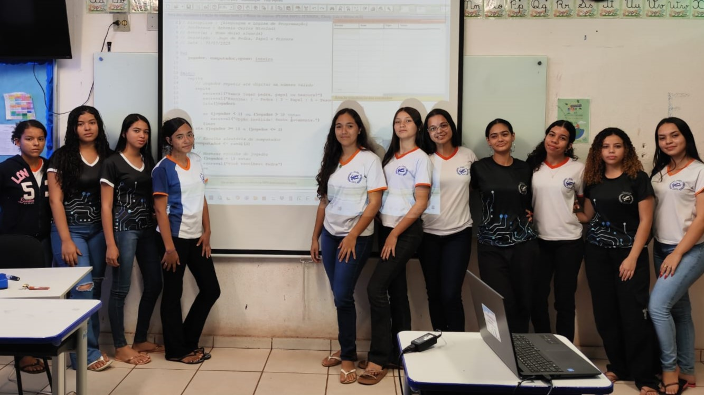
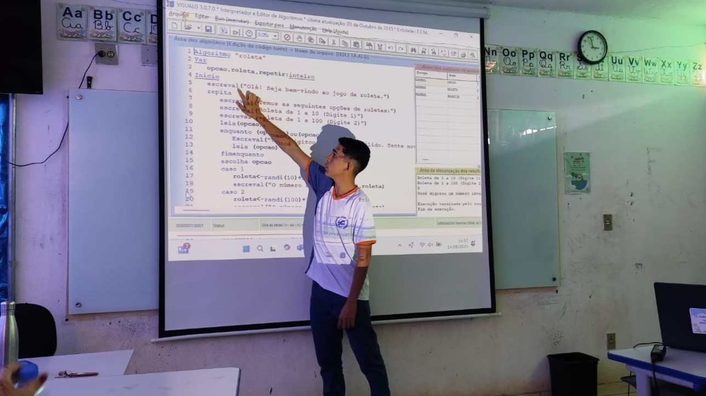
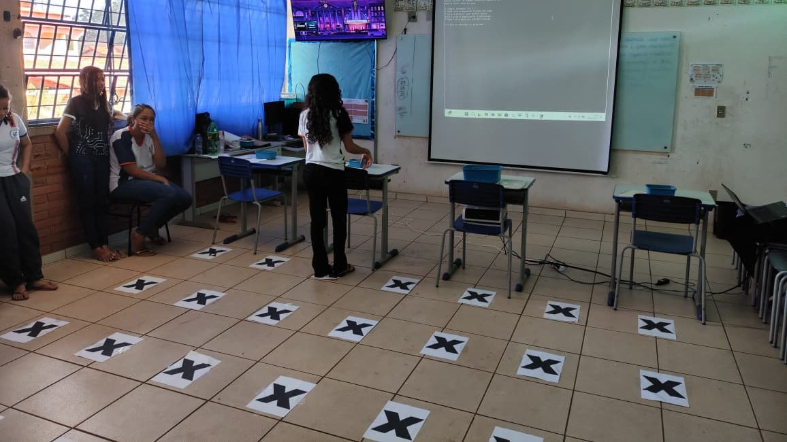
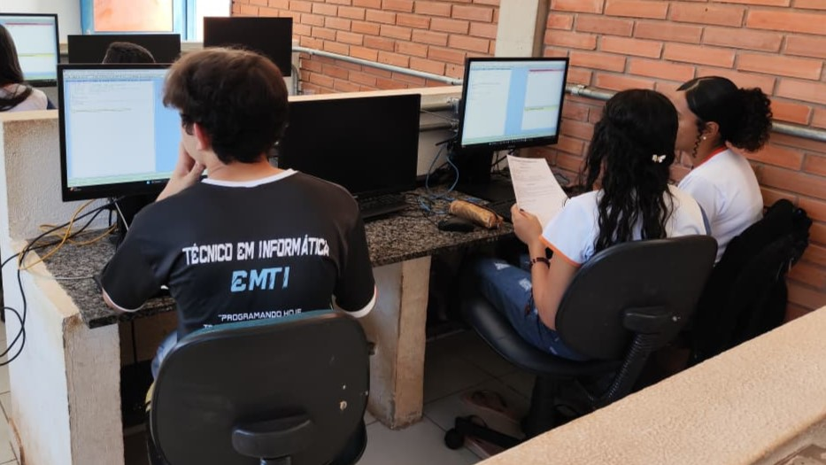

Escola Estadual Maria Barbosa Leite
Lógica de Programação
Nesta página você encontra registros das atividades desenvolvidas pelos alunos do curso Técnico em Informática na área de algoritmos e programação. Um espaço para apresentar nossos aprendizados, exercícios e projetos realizados durante as aulas.
Conheça nossas atividadesSobre Algoritmos
Durante o curso, aprendemos a criar algoritmos e desenvolver soluções para diferentes problemas por meio da lógica de programação. As atividades envolvem desde conceitos básicos até a construção de pequenos programas, estimulando o raciocínio lógico, a criatividade e a capacidade de resolver problemas
Desenvolvimento do raciocínio lógico e resolução de problemas.
Criação de sequências de instruções para executar tarefas.
Representação visual das etapas de um algoritmo.
Armazenamento de informações e realização de operações.
Confira alguns registros dos exercícios, atividades e projetos desenvolvidos pelos alunos durante as aulas de algoritmos e programação.




